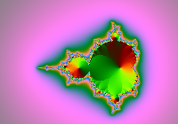
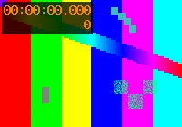
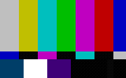
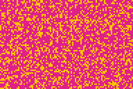

Image formats
Each picture here is decoded by Lean (PNG, JPEG and GIF decoders in this browser's Lean
source) and drawn by the GPU as an image paint. The host only fetches the bytes. The page
Images shows how img is laid out.
PNG

Works: PNG, all colour types and bit depths, interlaced, with transparency.
JPEG

Works: baseline and progressive JPEG, greyscale and colour.
GIF

Works: GIF87a and GIF89a, LZW, interlaced rows, transparency.
Animated GIF

Lean decodes every frame and its delay.
Gap: the window shows the first frame only (issue 1284).
Sizes
The width attribute alone keeps the ratio; both attributes set the box.
Not yet
WebP and AVIF are refused (issue 1283); an image with a image that is refused shows its alt text.
Tab icon
This page names an SVG icon with link rel="icon". The tab shows it at
16 points, drawn by the Lean SVG engine. A PNG, JPEG or GIF icon is decoded and fitted to the tab.
Gap: ICO icons are skipped
(issue 1282), and
/favicon.ico is not tried.